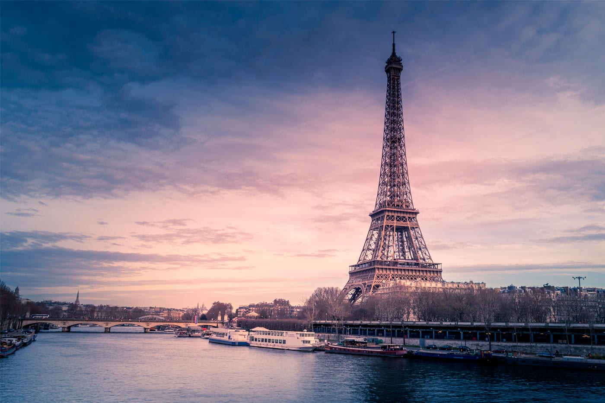
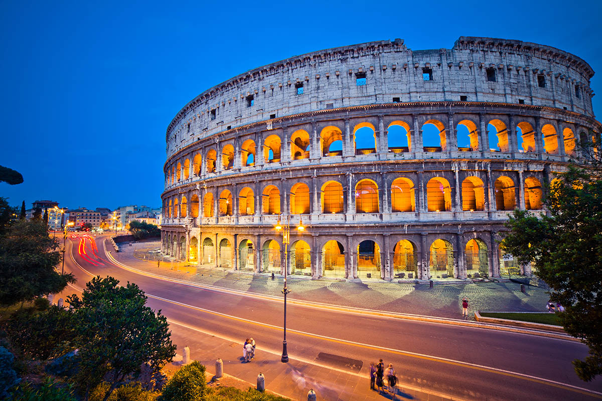
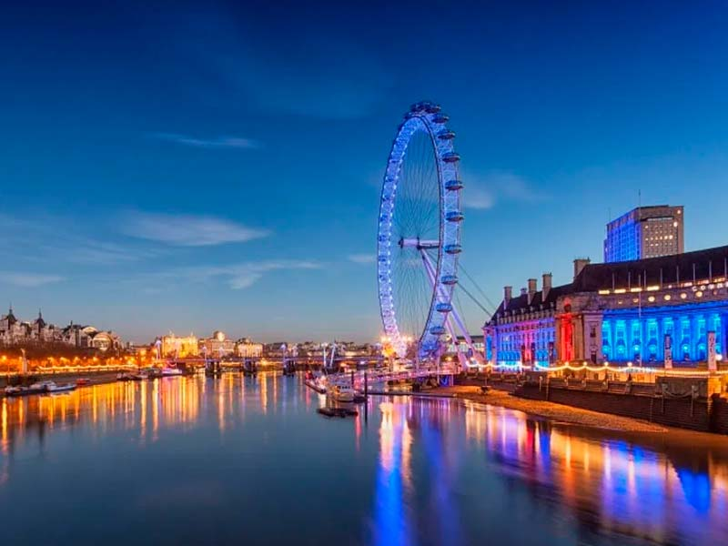

Sobre nós
EuroTour é um site que ajuda você a planejar sua viagem para a Europa, desde a compra de passagens, até a visita aos pontos turisticos mais importantes e cada região.
Alguns de nossos destinos:
Paris é a capital e a mais populosa cidade da França, com uma população estimada em 2020 de 2.148.271 habitantes em uma área de 105 quilômetros quadrados.Desde o século XVII, Paris é um dos principais centros de finanças, diplomacia, comércio, moda, ciência e artes da Europa. Também conhecida por ser um dos pontos turisticos mais romanticos da Europa.
Roma é é a capital da Itália e também da região do Lácio, além de ser o centro da Cidade Metropolitana de Roma e de uma comuna especial. Com 2.860.009 residentes em 1.285 km², Roma é a comuna mais populosa do país e a terceira cidade mais populosa da União Europeia. Um destino imperdivel para quem conhecer um pouco da história da Europa e da humanidade.
Londres é a capital da Inglaterra e do Reino Unido. Por dois milênios, foi um grande povoado e sua história remonta à sua fundação pelos romanos, quando foi nomeada Londínio. O centro de Londres, a antiga City of London, também conhecida como The Square Mile ("a milha quadrada") ou The City, mantém suas fronteiras medievais. Vá conhecer a terra da família Real Britância e se delicie com os monumentos históricos.
Ache uma de nossas agências.
Estamos sempre perto de você!